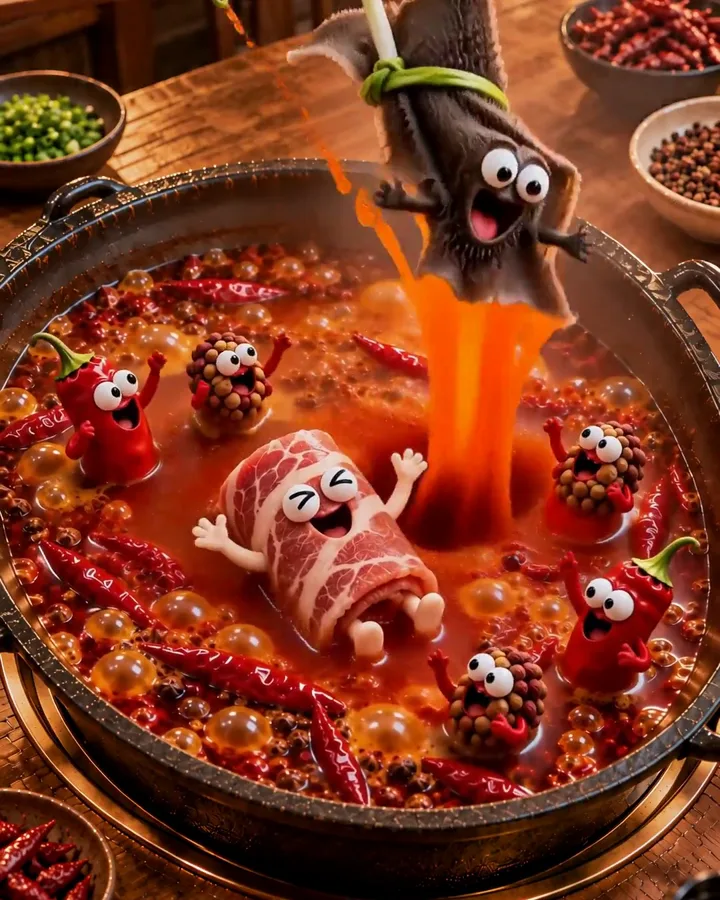

Fig 1.4.1audio.py・節錄整理
七上八下，每一下都有聲音
MiniMax 生成的毛肚彈了五、六下，大約一秒一下。剪接時加速兩倍，變成半拍一下；再逐幀找出每次「浸到底」的時間，在那一幀之後一格放入水聲，0.18 秒後接一聲彈簧 boing。
D1 = 1/30 # 聲音比畫面晚一幀
for t in (10.3, 10.9, 11.5): # 逐幀找到的三次浸湯
put(sfx, splash(0.4), t + D1, 0.35)
put(sfx, boing(170, 0.45), t + 0.18 + D1, 0.32)
def boing(f=180, d=0.6):
t = t_(d)
fr = f*(1 + 0.35*np.sin(2*np.pi*14*t)*np.exp(-4*t)) + f*0.6*np.exp(-12*t)
return np.sin(2*np.pi*np.cumsum(fr)/SR) * env(d, 0.003, d, 4)